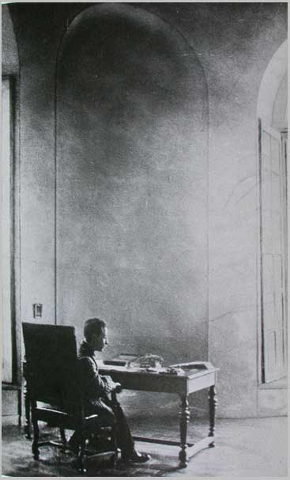
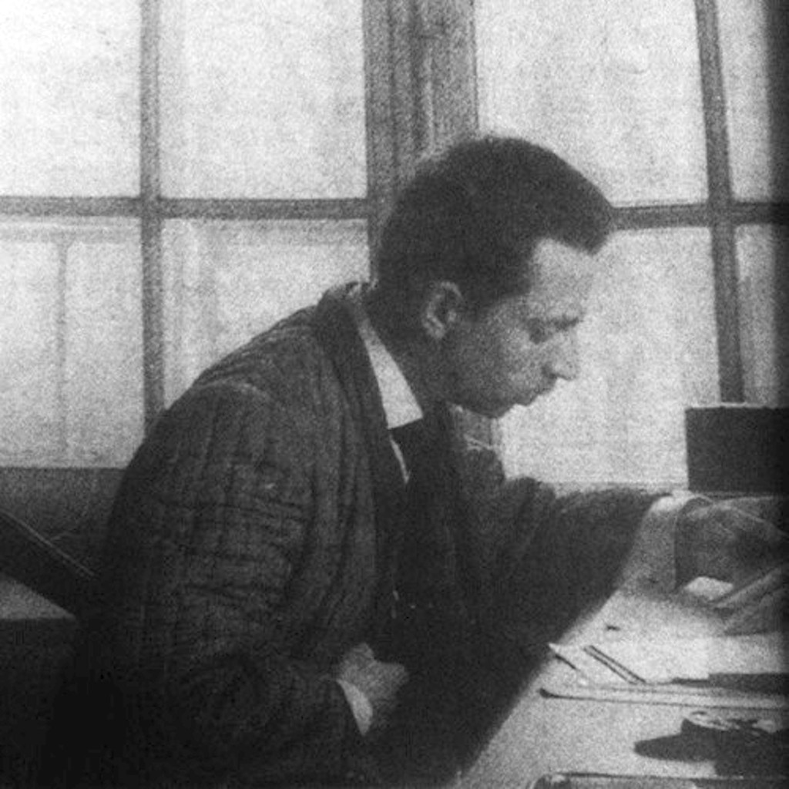

Rilke na starej fotografii
Hôtel Biron 1908
Rilke w swoim gabinecie w Hôtel Biron. Poeta wynajmował tam pokoje w latach 1908-1911. Jego sąsiadem był przez pewien czas Auguste Rodin, który urządził w budynku swoje atelier. Widoczne na fotografii biurko było własnością rzeźbiarza. Pałac przy rue de Varenne 77, w bezpośrednim sąsiedztwie Dôme des Invalides, jest dziś siedzibą Museé Rodin.
Sądzę, że powinienem zacząć jakąś pracę, teraz, kiedy uczę się patrzyć. Mam dwadzieścia osiem lat i właściwie nic się nie stało.
Powtórzmy: napisałem o Carpacciu studium, które jest złe, dramat, który się zwie „Małżeństwo” i coś fałszywego usiłuje dowieść dwuznacznymi środkami, i poezje. Ach, te poezje to takie nic, kiedy się je pisze za młodu. Powinno się z tym czekać i gromadzić sens i słodycz przez całe jedno życie, i to długie o ile możności, a potem na samym końcu, może potem mogłoby się napisać dziesięć dobrych wierszy.
— Rilke na kartach Maltego, przeł. W. Hulewicz
